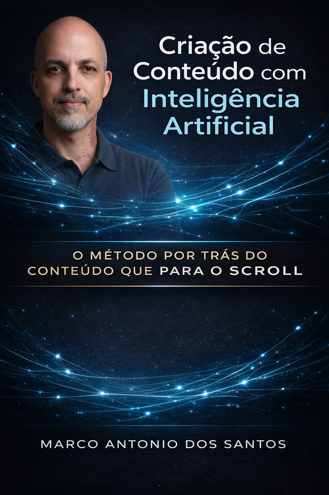
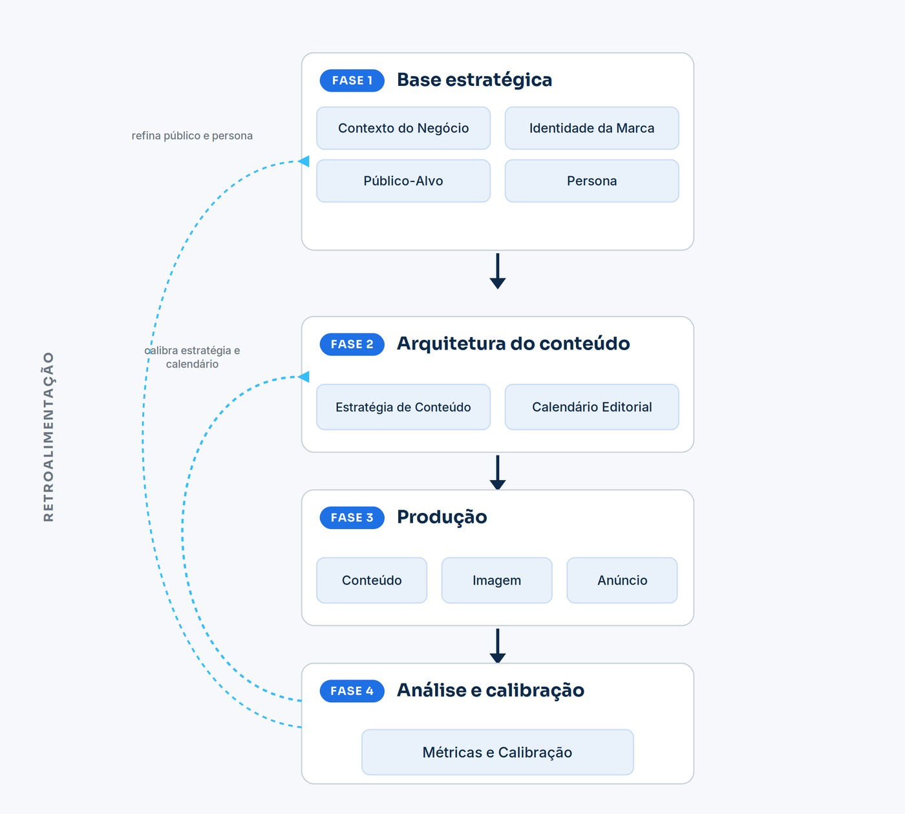

Um guia direto e estruturado para usar inteligência artificial e criar conteúdo que soa como o seu negócio — não como qualquer um.
Quero o método — R$ 37
Você já pediu para uma IA criar um post para o seu negócio e recebeu algo que parecia saído de um manual genérico de marketing?
Correto na forma. Vazio no conteúdo. Algo que poderia servir para qualquer empresa — e que, justamente por isso, não serve para a sua.
A reação mais comum é culpar a ferramenta. Trocar de plataforma, procurar o prompt mágico, assinar mais uma assinatura.
O problema nunca foi a ferramenta. Foi o que você entregou a ela.
Uma IA é como um profissional altamente qualificado, contratado hoje e colocado para trabalhar amanhã — sem onboarding, sem briefing, sem contexto sobre o negócio, o produto ou o cliente.
A única saída do ciclo é mudar o que entra. Este livro é um método estruturado para fazer exatamente isso.

Contexto do negócio, identidade, público-alvo e persona.
Estratégia de conteúdo e calendário editorial.
Conteúdo completo, guiado pelo contexto, não pelo acaso.
Cada ciclo fica mais preciso que o anterior.
Gestor há mais de 18 anos. Passou por Financeiro, Recursos Humanos, Tecnologia da Informação, Logística e Relacionamento com o Cliente, e como gerente de operações respondeu por uma equipe de mais de 200 pessoas. Implementar método em operação real é o que ele faz profissionalmente há quase duas décadas.
A inteligência artificial entrou nesse trabalho antes de virar assunto de livro. Marco concebeu e colocou em operação um sistema de SAC onde o agente fazia a triagem dos chamados, classificava por tipo de causa, verificava a condição de garantia, direcionava para a área responsável e organizava as informações para que a qualidade conduzisse as tratativas e montasse os planos de ação. Ele desenhou o fluxo, definiu as entradas, os gatilhos e as regras de negócio.
Este livro nasceu quando ele tentou aplicar a mesma lógica a um problema diferente. Ao lançar um projeto próprio, travou na criação de conteúdo. Foi ao mercado procurar como se faz e encontrou cursos que terminavam apontando para o próximo, mais caro. A parte que faltava estava sempre um degrau acima.
Então parou de comprar e estruturou o processo do jeito que estrutura qualquer operação. É esse processo que está neste livro — inteiro, sem degrau seguinte.
Se por qualquer motivo você achar que o método não é para você, é só pedir reembolso em até 7 dias — sem perguntas, sem burocracia.
Não é promoção nem isca para um curso mais caro. É o método completo, e é isso que ele custa.
Não. O método está completo aqui — os seis documentos, os prompts, a ordem e o exemplo aplicado do início ao fim. Não existe módulo seguinte nem parte reservada para outro produto. Os próximos livros vão tratar de outros assuntos, não de completar este.
Não. O livro ensina desde a base — o que informar, em que ordem, e com quais prompts. Não é preciso experiência prévia com IA.
É para quem tem um negócio ou uma atividade profissional, precisa publicar para vender, e já tentou usar IA e recebeu conteúdo genérico. A estrutura funciona para qualquer segmento — o que muda é o que você coloca em cada documento. O livro usa um exemplo fictício (a Game Star) para ilustrar cada etapa na prática.
Não é para quem procura post pronto em cinco minutos. O método tem seis documentos e uma ordem, e a primeira aplicação leva cerca de uma semana.
O primeiro ciclo do método tem cinco semanas: uma para montar a base estratégica, quatro para produzir e publicar. Não é um atalho — é um sistema que continua funcionando depois da primeira aplicação.
PDF, para ler no celular, tablet ou computador. Acesso imediato após a confirmação do pagamento.
Garantia incondicional de 7 dias. Reembolso completo, sem perguntas.